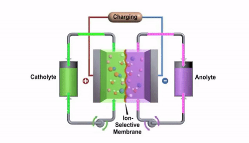

Why do Batteries Die?
This one is fairly simple...
When batteries are new, or charged up in the case of rechargeable batteries, lots of tiny particles called ions are moving about between the anode and cathode. While this chemical reaction may sound complicated, it’s actually very simple: The anode combines with the electrolyte to form a compound producing ions and free electrons, and the cathode captures the electrons forming a conductive path. The back and forth flow of ions between the anode and cathode lead to a conductive path for the free electrons that produces electricity. The battery will continue to produce electricity until one or both of the electrodes run out of chemicals necessary to sustain the reaction. Since no chemical process can go on forever, the batteries ability to produce energy slows down over time due to an electro-chemical change in the anode and cathode that eventually causes them to stop providing electrons which is how a battery “dies.”
